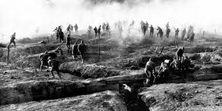

Overview: Modern history examines rapid technological change, global conflicts, and shifting political orders.
Focus: The World Wars reshaped borders, societies, and international relations in the 20th century.
The World Wars led to major changes in technology, society, and global politics. They resulted in the creation of international organizations like the United Nations. Understanding this era helps explain many current events and conflicts.
